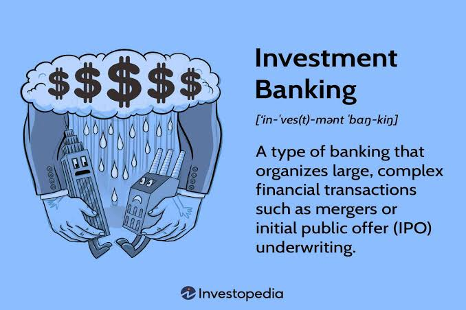

Investment Banking
specialized division of the financial sector that helps corporations, governments, and large institutions raise capital and complete complex financial transactions.

Investment Banking is a division of banking that provides financial advisory services to corporations, governments, and institutions on capital raising and M&A transactions. Investment bankers act as intermediaries between companies and investors, helping clients navigate complex financial transactions.
The role requires a combination of analytical skills, financial modeling expertise, and the ability to manage high-pressure, deadline-driven projects. Investment bankers work long hours but are compensated with some of the highest salaries in finance.
Core Functions
Investment bankers raise capital through equity (ECM) and debt (DCM) markets while advising on mergers, acquisitions, and corporate restructuring. They help companies navigate complex financial transactions from start to finish.
The work involves building detailed financial models, preparing pitch books, conducting industry research, and managing transaction processes. Investment bankers are involved in every stage of a deal, from initial client meetings to final execution.
• Financial Modeling: Building 3-statement models, DCF valuation, and LBO analysis.
• Pitch Books: Presentation decks created to win client advisory mandates.
• Transaction Execution: Managing due diligence, data rooms, and negotiation processes.
Mergers & Acquisitions (M&A)
M&A involves advising companies on buying, selling, merging, or restructuring businesses. Investment bankers value targets, negotiate deal terms, and structure transactions to maximize value for their clients.
The M&A process includes identifying potential targets, conducting financial due diligence, valuing the target company, and negotiating the final deal terms. Investment bankers play a central role in ensuring the transaction is structured efficiently from a financial and legal perspective.
Equity Capital Markets (ECM) & Debt Capital Markets (DCM)
Equity Capital Markets (ECM): ECM involves advising companies on raising capital through public and private equity offerings, including Initial Public Offerings (IPOs), follow-on offerings, and private placements. ECM professionals help companies access public or private equity markets to fund growth and expansion. The ECM process includes determining the optimal offering structure, pricing the shares appropriately, and marketing the offering to potential investors. ECM bankers work closely with the company's management team and legal advisors throughout the transaction.
Debt Capital Markets (DCM): DCM involves advising companies on raising capital through debt issuance, including corporate bonds, leveraged loans, and other debt instruments. DCM professionals help companies access debt markets to raise funds for operations, acquisitions, or refinancing. The DCM process includes determining the optimal debt structure, setting the interest rate and terms, and marketing the debt to institutional investors. DCM bankers must understand credit markets and the specific risk profiles of borrowing companies.
• ECM (Equity): IPOs, follow-on offerings, private placements. Ownership diluted in exchange for growth equity capital.
• DCM (Debt): Corporate bonds, leveraged loans, refinancing. Debt obligations structured with interest coupon terms.
Career Progression
Analyst (2-3 years) → Associate (2-3 years) → Vice President → Director → Managing Director.
Each level comes with increased responsibility, client interaction, and compensation. Promotion is based on performance, deal execution, and the ability to build client relationships. Most professionals who stay in investment banking for the long term eventually become Managing Directors, leading teams and managing key client relationships.
Analyst (Modeling & Decks) ➔ Associate (Project Management) ➔
Vice President (Deal Execution & Execution Lead) ➔ Director / MD (Client
Relationships & Revenue Generation)
📝 Practice Quiz & Submodule Check
Complete all questions to unlock Submodule 4.2Answer the multiple-choice questions below to test your understanding of Investment Banking core concepts.